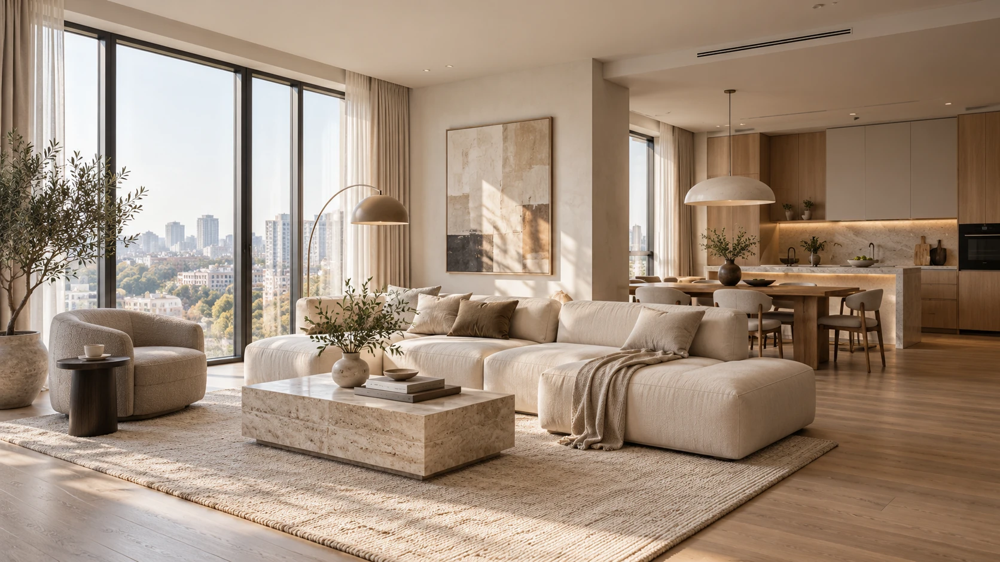
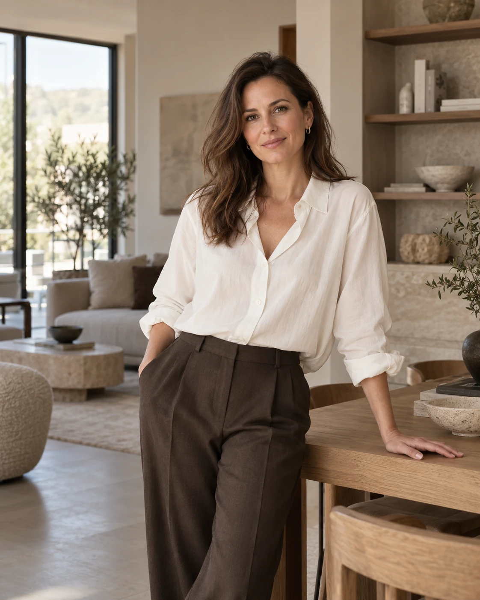

01 / ПРОЕКТ
SOFT LIGHT
Светлый интерьер, построенный на естественном свете, мягких фактурах и спокойной палитре натуральных материалов.
ТРИ КАДРА · ОДНА ИСТОРИЯЧастный интерьерный дизайнер · Москва
ПРОСТРАНСТВА ДЛЯ ЖИЗНИСоздаю спокойные и продуманные пространства, где эстетика работает вместе с комфортом и образом жизни.
Смотреть проекты
МОЙ ПОДХОД
Я создаю пространства, которые отражают привычки, ритм и характер своих владельцев. Поэтому каждый проект начинается с диалога — и только потом появляются планировка, материалы, свет и детали.
ИЗБРАННЫЕ ПРОЕКТЫ
Светлый интерьер, построенный на естественном свете, мягких фактурах и спокойной палитре натуральных материалов.
ТРИ КАДРА · ОДНА ИСТОРИЯТёплое пространство с глубокими природными оттенками, ореховым деревом и тактильными материалами.
ТРИ КАДРА · ОДНА ИСТОРИЯСовременный дом, где интерьер продолжает окружающий ландшафт, а дерево, камень и естественный свет связывают пространство с сосновым лесом.
ТРИ КАДРА · ОДНА ИСТОРИЯ
ОБО МНЕ
Интерьерный дизайнер
Для меня интерьер — это не набор красивых предметов, а пространство, которое должно работать для конкретного человека.
В работе я соединяю функциональную планировку, натуральные материалы, свет и спокойную современную эстетику. Мне важно, чтобы результат оставался актуальным не один сезон и становился естественной частью повседневной жизни.
Главное в проекте — найти баланс между красотой, функцией и ощущением дома.
УСЛУГИ
Планировочные решения, концепция, материалы, цвет, мебель и освещение — всё, что формирует будущий интерьер как единую систему.
Подбор мебели, света, отделочных материалов и предметов интерьера в соответствии с концепцией проекта.
Помощь в сохранении первоначального замысла проекта на этапе его реализации.
КАК Я РАБОТАЮ
Обсуждаем пространство, задачи, привычки, пожелания и то, каким вы хотите видеть будущий интерьер.
Формируем планировочное решение, визуальное направление, палитру и основные материалы.
Прорабатываем интерьер до деталей и готовим решения, необходимые для его реализации.
Сопровождаем проект, уточняем решения и помогаем сохранить целостность задуманного интерьера.
КРАСОТА В ПОВСЕДНЕВНОСТИ
Он должен оставаться удобным утром, вечером, в будни и спустя годы после завершения проекта.
ЕСТЬ ПРОЕКТ?
Расскажите немного о будущем интерьере — квартире, доме или отдельном пространстве.